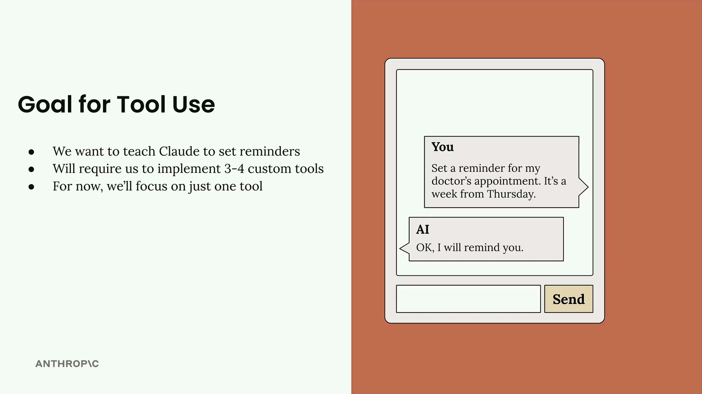
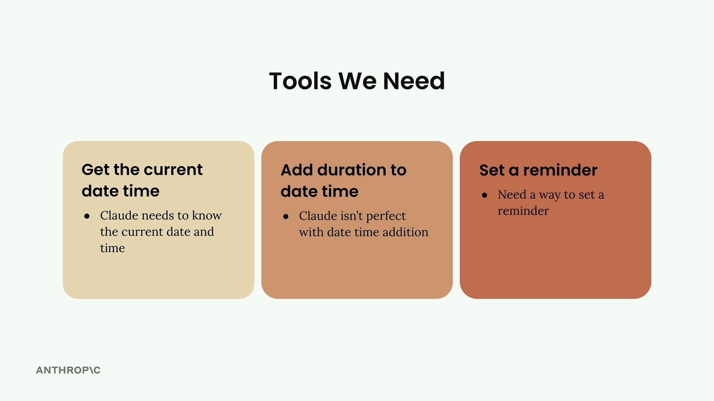

Обзор проекта
Чему научитесь
Видео 2:23 и текст урока
К концу урока вы сможете:
- описать цель учебного проекта с напоминаниями;
- назвать три ограничения Claude, которые мешают её достичь;
- перечислить три инструмента, которые их закрывают.
Видео и текст урока.
Смотреть урок на Skilljar Project overview · 2:23Мы построим практический проект: научим Claude ставить напоминания на будущие даты. На первый взгляд это просто, но по пути вскрывается несколько интересных проблем, которые мы решим с помощью собственных инструментов.

Цель понятная: сказать Claude «Set a reminder for my doctor's appointment. It's a week from Thursday» и получить ответ «OK, I will remind you.» Но чтобы это заработало, нужно справиться с ограничениями в том, как Claude обращается со временем и напоминаниями.
В чём сложность
Хотя Claude знает текущую дату, нужно решить три конкретные проблемы:
- Ограниченное знание времени: Claude может знать текущую дату, но не точное время;
- Сложности с вычислением дат: Claude не всегда хорошо складывает время, особенно когда нужно отсчитать много дней вперёд;
- Нет возможности ставить напоминания: Claude не умеет ставить напоминания — встроенного механизма для этого у него нет.
Каждое из этих ограничений — разрыв между тем, что Claude умеет сам по себе, и тем, что нужно нашей системе напоминаний. Инструменты закрывают эти разрывы.
Какие инструменты нужны

Сделаем три отдельных инструмента — по одному на каждую проблему:
- Получить текущие дату и время: Claude должен точно знать текущие дату и время;
- Прибавить длительность к дате и времени: Claude не идеален в сложении дат, поэтому дадим ему надёжный инструмент;
- Поставить напоминание: нужен способ действительно поставить напоминание в системе.
Будем реализовывать инструменты по одному, начиная с самого простого. Так мы разберёмся, как работает вызов инструментов, прежде чем браться за более сложную функциональность. В итоге Claude сможет обрабатывать запросы на естественном языке вроде «remind me in a week», комбинируя инструменты, чтобы вычислить точное время и поставить напоминание.
Проект показывает ключевой принцип работы с ИИ: если у модели есть ограничение, мы расширяем её возможности инструментами, а не пытаемся обойти ограничение в промпте.
Дальше
Начнём с первого инструмента — функции, которая возвращает текущие дату и время.
Оригинал урока: Project overview.